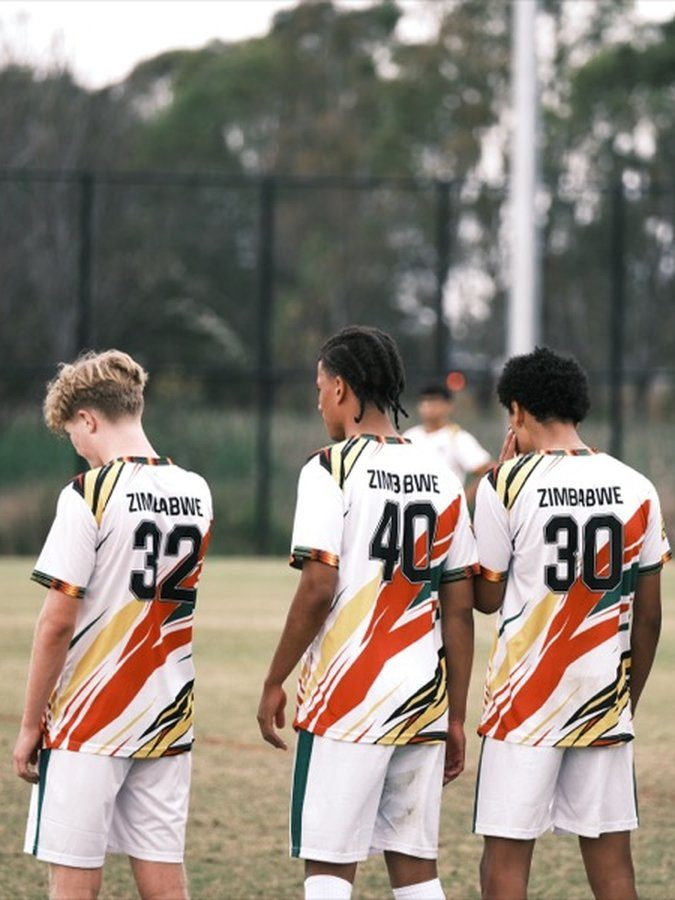
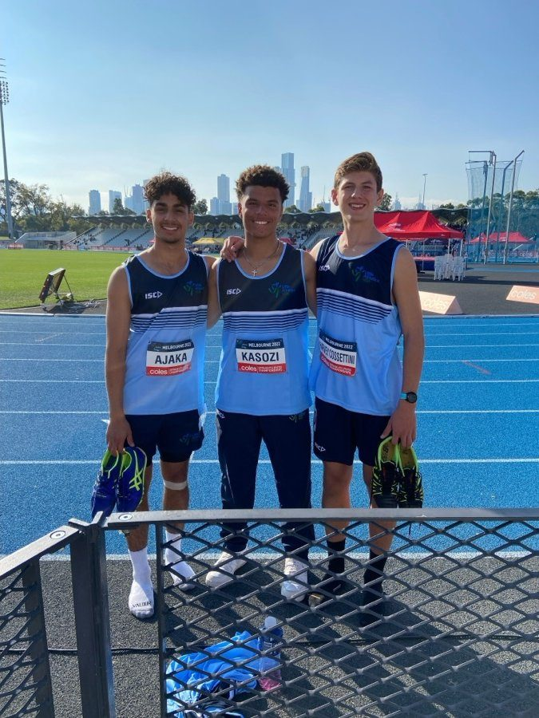

Benjamin Kasozi
Building athletes from rehabilitation → performance.

Give Me An Athlete. Give Me A Problem.
National Athletics, then the NPL system
Years competing as a national athletics athlete, then in Sydney's NPL football system, showed me what separates athletes who return well from injury from those who don't — and that gap is exactly what I'm training to close.
Before physiotherapy and coaching, athletics gave me an early look at what serious training and competition demands. Football in the NPL system here in Sydney sharpened that further — between the two, that's a big part of why I'm building toward a career at that exact intersection.


Work at the intersection of rehabilitation and athletic performance — helping athletes not only return from injury, but return capable of performing at a higher level.
Time In The Field
Rehabilitation and performance shouldn’t operate as separate processes.
Shadowed multidisciplinary practice combining physiotherapy and performance training.
- Observed musculoskeletal assessment and rehabilitation in a clinical setting.
- Observed exercise selection and progression during athlete-facing strength and conditioning sessions.
- Saw first-hand how physiotherapy and S&C coordinate around a shared athlete.
- Rehabilitation and performance training aren’t separate processes — exercise progression needs to reflect both tissue capacity and the demands the athlete needs to return to.
- Decisions rarely came from one person in isolation — the clearest sessions were ones where the physio and S&C coach were working from the same picture of the athlete, not handing off a file.
- Assessment wasn’t a one-off checkpoint before training started — it kept feeding into how a session was adjusted on the day.
Applied Projects
Case-study style projects completed as part of my degree — applying testing, programming and analysis to hypothetical or historical athlete scenarios rather than live clients.
Illustrative performance profile across the four tested qualities, built from the interpretation above rather than new data.
Sample week from the Build phase (Week 5), showing session type and relative intensity by day.
Illustrative 12-week periodisation curve across Build, Intensify and Taper phases.
Skills I’m Building
Developing my understanding of movement assessment and musculoskeletal screening through university study and observation.
Building experience designing evidence-informed exercise programs through academic and practical coursework.
Learning how training load and recovery data are tracked and interpreted to support safe, progressive overload.
Developing clear, athlete-facing communication through coaching practice and observation.
Now, Next, Future
Science first, then coaching real athletes, then clinical practice at the elite level.
Building the science base for practice — biomechanics, physiology, and movement assessment — across the first half of the degree.
Core units cover functional anatomy, exercise physiology, biomechanics, and introductory clinical assessment — the science base before specialising in the second half of the degree.
Gaining strength and conditioning accreditation alongside hands-on coaching experience with athletes.
Covers program design, exercise technique coaching, and athlete monitoring — the practical skill set for working pitch-side with a training squad.
Completing the clinical training required to practice as a registered physiotherapist, building the assessment and rehabilitation skills the high performance specialisation builds on.
A postgraduate physiotherapy degree covering clinical assessment, diagnosis and rehabilitation across musculoskeletal and other clinical presentations — the qualification required for physiotherapy registration in Australia, and the step before specialising further in elite sport.
A long-term specialisation built on physiotherapy registration and clinical experience, aimed at eventually working pitch-side and court-side with elite athletes.
A postgraduate clinical qualification combining physiotherapy practice with a specialisation in elite sport — but programs like ACU's Sports & Exercise Physiotherapy pathway require a physiotherapy qualification, AHPRA registration and typically at least two years of post-graduate clinical experience before entry, so this sits as a long-term specialisation beyond the Master of Physiotherapy, not an immediate next step.
“The athletes I want to work with need both sides — the clinical rigor to manage an injury properly, and the coaching craft to build them back stronger than before. That intersection is what I'm training for.”
Current Areas of Interest.
How can we return an athlete from injury without only returning them to baseline?
My current thinking is that clinical markers like strength and range of motion are necessary but not sufficient — return-to-sport should also test the athlete against the speed, power and change-of-direction demands specific to their position. Getting back to ‘normal’ isn’t the same as being ready to perform at the level they left.
What separates fast athletes from athletes with good acceleration?
My current thinking is that these are related but distinct qualities — acceleration is about how quickly you get up to speed, while top-end speed is a separate quality built on stride mechanics and force application at high velocity. An athlete can be excellent at one without the other, which is why I’d test and train them separately.
How can athlete monitoring influence training decisions?
My current thinking is that monitoring data is only useful if it actually changes what happens in a session — otherwise it’s just numbers on a spreadsheet. The goal would be building simple, athlete-specific triggers, like adjusting load when wellness scores or RPE trends signal fatigue, rather than collecting data without acting on it.
How can S&C and physiotherapy work together during return-to-performance?
My current thinking is that the two disciplines need to overlap earlier than they often do — physio clearing an injury and S&C starting performance work as separate phases probably leaves gaps. A shared return-to-performance plan, with both sides tracking the same benchmarks, seems like it would close that gap more safely.
What I Bring to an Internship
Set-up, testing assistance, data entry, equipment, session preparation and whatever helps the performance team operate efficiently.
Performance testing, exercise prescription, monitoring, conditioning and interpretation of athlete data through my university work.
Experience within football environments gives me context for the physical and practical demands players face.
I’m coming into an internship to learn. I want feedback, responsibility and exposure to how experienced practitioners make decisions.
Beyond the Internship.
Opportunities to observe, assist and learn in athlete training environments.
Testing, athlete monitoring and performance-analysis experience.
Further observational experience within sports/MSK environments.
Give Me An Athlete.
Choose an athlete. Give me a performance problem.
These scenarios demonstrate my developing sport-science reasoning and are not individual clinical or medical recommendations.
Illustrative monitoring dashboard — the kind of weekly load and readiness view I would track this against, not this athlete’s real data.
Wingers rely on short, sharp bursts more than top-end speed, so I'd start with 10m acceleration to capture how quickly they get out of the blocks, then 30m to see how that acceleration carries into a fuller sprint. A countermovement jump (CMJ) shows how much force they produce through the legs in a single explosive action, and reactive strength index (RSI) — jump height divided by ground contact time — shows how well they reuse that force elastically, which may be relevant when they plant and cut. Lower-body strength testing can provide information about the strength foundation much of this is built on.
From those numbers I'd dig into acceleration mechanics — shin angles, ground contact time, and how much force is applied horizontally rather than vertically, since horizontal force production is associated with what separates good accelerators from average ones. I'd also look at how much max-velocity running the winger actually gets exposed to in games and training, because if they rarely reach top speed in matches, that may reflect a training gap rather than a talent ceiling. Reactive strength can provide information about how efficiently they absorb and redirect force when cutting past a defender.
The program would combine short-distance sprint work with resisted acceleration — sled pushes or resisted sprints — to build horizontal force production specifically. Plyometrics (bounds, hops, depth jumps) develop the reactive strength picked up in testing, and traditional strength / power work (squats, hip thrusts, jump variations) underpins both. I'd sequence these so strength work supports the sprint and plyo sessions rather than competing with them for recovery.
Ongoing sprint splits tell me if the training is actually transferring to speed, and repeat CMJ testing tracks whether power output is trending up or dropping, which may be associated with fatigue or overreaching. Session RPE and wellness checks (sleep, soreness, mood) capture the athlete's internal response to the load, and tracking total training exposure makes sure I'm not accidentally overloading a winger who's also playing full matches on the weekend.
Selected readings that shaped this section — not an exhaustive review.
- Morin, J-B., & Samozino, P. (2016). Interpreting power-force-velocity profiles for individualized and specific training. International Journal of Sports Physiology and Performance.
- Young, W., McDowell, M., & Scarlett, B. (2001). Specificity of sprint and agility training methods. Journal of Strength and Conditioning Research.
- Flanagan, E. P., & Comyns, T. M. (2008). The use of contact time and the reactive strength index to optimize fast stretch-shortening cycle training. Strength and Conditioning Journal.
Illustrative monitoring dashboard — the kind of weekly load and readiness view I would track this against, not this athlete’s real data.
A single 30m sprint tells me raw speed, but rugby wingers need to repeat that speed multiple times a game, so I'd add a repeated sprint test — something like 6 x 30m with short recoveries — to see how much their times drop off across efforts. CMJ and lower-body strength give me the power and strength base, and the Yo-Yo Intermittent Recovery Test (IR1) shows how well their aerobic system supports repeated high-intensity efforts, since aerobic fitness is associated with recovery between sprints more than is often assumed.
The key question is why performance drops off across repeated efforts. That often comes down to phosphocreatine (PCr) recovery — the fast energy system used in each sprint needs roughly 3–5 minutes to fully restore, which a rugby match rarely allows — so I'd look at how well the athlete tolerates incomplete recovery. Lactate tolerance and the aerobic contribution to repeated efforts both matter here too, and I'd watch whether sprint mechanics start to break down under fatigue, since that may be associated with injury risk.
Repeated sprint training itself — sets of short sprints with match-realistic recovery windows — may be one of the more specific ways to help build this quality, alongside short-recovery interval running to stress the same energy systems. I wouldn't neglect the aerobic base, since a stronger aerobic base may support faster recovery between efforts, and I'd keep a maintenance dose of strength and power work running alongside so raw sprint speed doesn't slide backwards while repeatability improves.
One useful marker is the sprint decrement score — the percentage drop-off across repeated sprints — which can provide information about whether the program is having an effect. I'd track session RPE to gauge how hard these sessions feel relative to prescribed intensity, use GPS data to monitor high-speed running in games and training, and keep an eye on wellness markers, since repeated-sprint work tends to be highly fatiguing.
Selected readings that shaped this section — not an exhaustive review.
- Spencer, M., Bishop, D., Dawson, B., & Goodman, C. (2005). Physiological and metabolic responses of repeated-sprint activities: specific to field-based team sports. Sports Medicine.
- Girard, O., Mendez-Villanueva, A., & Bishop, D. (2011). Repeated-sprint ability - part I: factors contributing to fatigue. Sports Medicine.
- Bangsbo, J., Iaia, F. M., & Krustrup, P. (2008). The Yo-Yo intermittent recovery test: a useful tool for evaluation of physical performance in intermittent sports. Sports Medicine.
Illustrative monitoring dashboard — the kind of weekly load and readiness view I would track this against, not this athlete’s real data.
The Yo-Yo Intermittent Recovery Test is my go-to here because it mimics the stop-start nature of match running far better than a straight run, and it estimates aerobic capacity for field sport athletes specifically. I'd pair that with resting and submaximal heart rate, which track cardiovascular fitness over time without needing a lab, and body composition, since excess body mass may make covering the same match distance more physiologically costly.
Beyond a single fitness number, I'd want to understand the aerobic base being trained, the lactate threshold — the intensity at which the body shifts to relying more on anaerobic metabolism — and running economy, which is how efficiently the athlete uses oxygen at a given pace. I'd also look at match-running data where available: total distance, high-speed running, and how output changes across the two halves, since a second-half drop-off may be associated with an aerobic limitation rather than a tactical one.
Aerobic interval training — long intervals at high intensity with incomplete recovery — can be an effective way to help shift the aerobic ceiling, and I'd add tempo runs at a controlled pace to build the aerobic base without excessive fatigue. Small-sided games train match-specific aerobic and anaerobic demands simultaneously while keeping the ball involved, which matters for buy-in. All of this sits on progressive overload — gradually increasing volume or intensity so the aerobic system is forced to adapt without tipping into overtraining.
A Yo-Yo re-test after a training block can provide information about whether aerobic capacity has improved. I'd also track heart rate response to a fixed training stimulus over time — a lower heart rate for the same effort is generally associated with aerobic adaptation — alongside GPS-derived training load and session RPE to make sure the prescribed dose matches what the athlete is actually absorbing.
Selected readings that shaped this section — not an exhaustive review.
- Bangsbo, J., Iaia, F. M., & Krustrup, P. (2008). The Yo-Yo intermittent recovery test: a useful tool for evaluation of physical performance in intermittent sports. Sports Medicine.
- Krustrup, P., et al. (2003). The Yo-Yo intermittent recovery test: physiological response, reliability, and validity. Medicine & Science in Sports & Exercise.
- Stølen, T., Chamari, K., Castagna, C., & Wisløff, U. (2005). Physiology of soccer: an update. Sports Medicine.
Following medical/physiotherapy clearance, I would use strength, sprint and performance measures to help inform progression back toward full sporting demands in collaboration with the treating practitioner and performance team.
Illustrative monitoring dashboard — the kind of weekly load and readiness view I would track this against, not this athlete’s real data.
Hamstring strength testing — using a handheld dynamometer or isokinetic device where available — gives an objective number rather than relying on how the athlete feels, and I'd compare it directly against the uninjured side. Nordic curl strength specifically is associated with hamstring injury risk in the research, so I'd track that closely. Single-leg hop testing checks whether the leg can tolerate load and produce force safely, range of motion can provide information about whether the injury site has settled, and sprint mechanics may indicate whether the athlete is compensating or protecting the leg without realising it.
The core question through rehab is always the same: how big is the gap between the injured and uninjured side, and is it closing? I'd track the strength deficit directly, with particular attention to eccentric hamstring capacity — the muscle's ability to lengthen under load, which is thought to be involved in most hamstring strains during sprinting. I'd also watch for movement compensations that develop while protecting the injury, since those may become their own issue later, and assess genuine readiness to sprint at high speed rather than assuming time alone means the tissue is ready.
Rehab has to be progressive and criteria-based rather than following a fixed calendar. I'd start with isometric holds to reintroduce load safely, move into eccentric-focused work — Nordic curls are commonly used given supporting research — and only then build toward a graduated return-to-sprint protocol that increases speed and volume in controlled steps. Change-of-direction work comes back once straight-line sprinting is solid, since cutting places different demands on the hamstring, and full training integration is the last step, not the first.
The limb symmetry index — comparing injured to uninjured side across strength and hop tests — can provide useful information about readiness, and I wouldn't clear a return to full training until that gap has closed to an acceptable range. I'd track sprint exposure carefully as speed is reintroduced, monitor pain and soreness after each session, use RPE to see how hard the athlete is finding each stage, and apply clear return-to-play criteria rather than a gut feeling before signing off on full training or match involvement.
Selected readings that shaped this section — not an exhaustive review.
- Opar, D. A., Williams, M. D., & Shield, A. J. (2012). Hamstring strain injuries: factors that lead to injury and re-injury. Sports Medicine.
- Bourne, M. N., et al. (2017). Eccentric knee flexor strength and risk of hamstring injuries in rugby union: a prospective study. American Journal of Sports Medicine.
- van der Horst, N., Smits, D-W., Petersen, J., Goedhart, E. A., & Backx, F. J. G. (2015). The preventive effect of the Nordic hamstring exercise on hamstring injuries in amateur soccer players: a randomized controlled trial. American Journal of Sports Medicine.
Illustrative monitoring dashboard — the kind of weekly load and readiness view I would track this against, not this athlete’s real data.
The 5-0-5 agility test is built specifically to measure deceleration and change-of-direction speed rather than straight-line speed, which fits netball's constant cutting and stopping far better than a standard sprint test. Single-leg hop testing and CMJ give me a picture of unilateral and bilateral power, RSI can provide information about how efficiently that power is used elastically during quick ground contacts, and lower-body strength testing is associated with the whole picture, since netball's landing and cutting demands tend to be strength-dependent.
Netball has one of the highest non-contact ACL injury rates of any sport, largely from repeated landing and cutting under fatigue, so I'd pay close attention to deceleration mechanics — how well the athlete controls their body when slowing down — and cutting technique, particularly whether the knee tracks in line with the foot or collapses inward. Landing control on single-leg contacts and hip and knee stability more broadly are both central here, since weaknesses in either may be associated with injury risk as well as performance.
Change-of-direction drills that progressively add reaction and decision-making, rather than pre-planned cutting patterns, build the specific quality netball demands, and I'd pair that with deliberate deceleration training, since most athletes train acceleration far more than they train stopping safely and efficiently. Plyometrics may help build the elastic power reflected in RSI testing, and single-leg strength work — split squats, single-leg Romanian deadlifts — may support the landing and cutting stability associated with knee protection, while also improving performance.
Re-testing 5-0-5 times over the training block can provide information about whether change-of-direction speed is improving, and I'd track landing quality — through video review or simple qualitative screening — since technique can improve even before the numbers move. Session RPE and wellness monitoring apply here as much as anywhere, and I'd track total training exposure, particularly cumulative jump and cutting volume, since that's where overuse issues tend to build up in netball athletes.
Selected readings that shaped this section — not an exhaustive review.
- Hewett, T. E., Myer, G. D., & Ford, K. R. (2006). Anterior cruciate ligament injuries in female athletes: Part 1, mechanisms and risk factors. American Journal of Sports Medicine.
- Nimphius, S., Callaghan, S. J., Bezodis, N. E., & Lockie, R. G. (2018). Change of direction and agility tests: challenging our current measures of performance. Strength and Conditioning Journal.
- Krosshaug, T., et al. (2007). Mechanisms of anterior cruciate ligament injury in basketball: video analysis of 39 cases. American Journal of Sports Medicine.